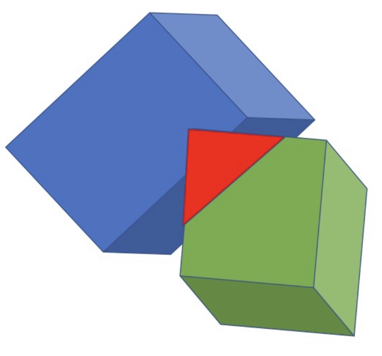
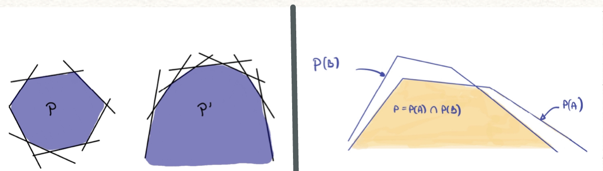
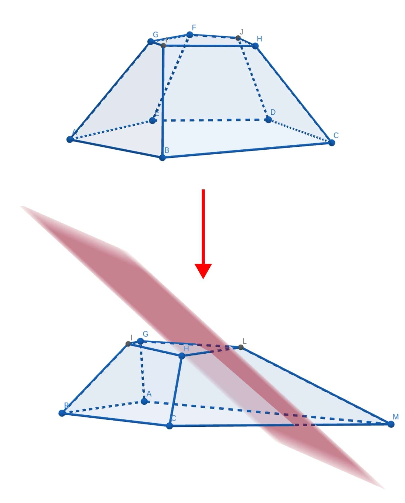
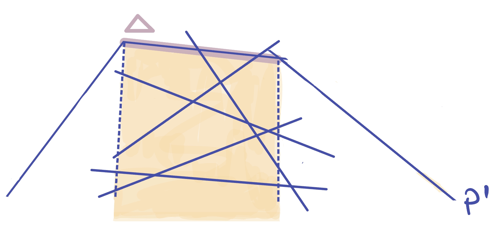
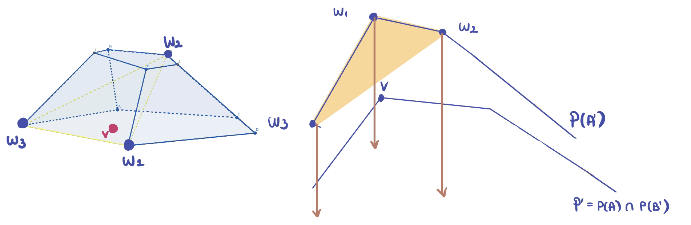
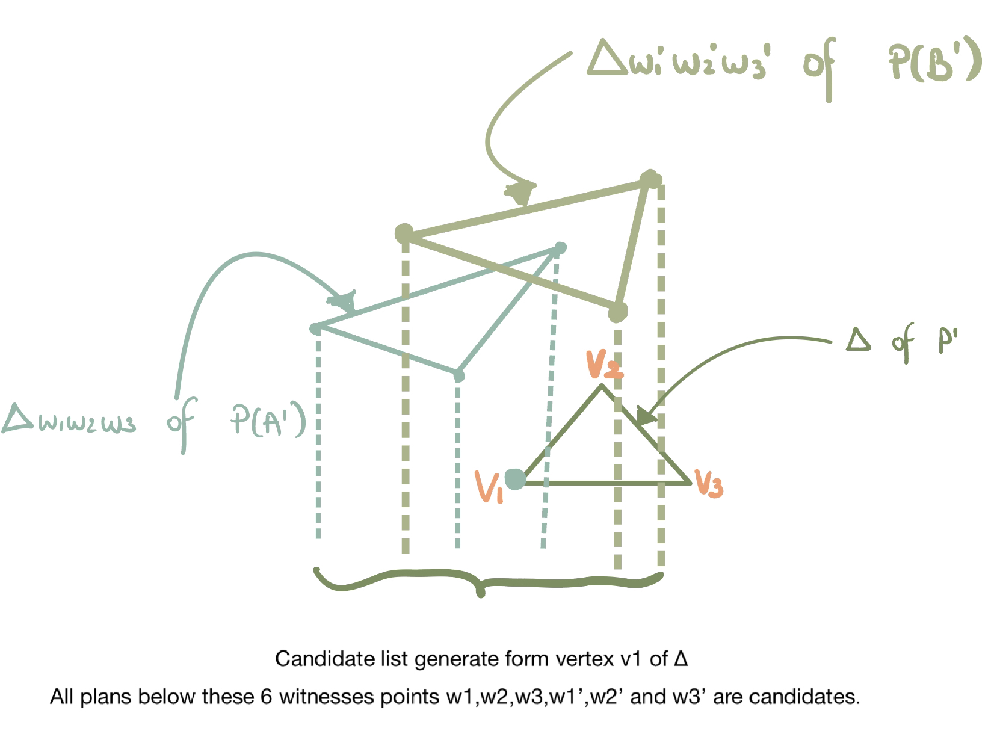

The studied problem is the following : given 2 convex polyhedra in 3D, compute their intersection.

Representation of a polyhedron
A convex polyhedron $P$ can be described using the set of planes $H$ defining its faces.
$$
H = \left \{
\begin{array}{r c l}
H_1 & \equiv & a_1x + b_1y +c_1z = d_1 \\
H_2 & \equiv & a_2x + b_2y +c_2z = d_2 \\
\vdots & & \vdots \\
H_n & \equiv & a_nx + b_ny +c_nz = d_n
\end{array}
\right \}
$$
By associating a constraint to each face, $P$ becomes the intersection of all these constraints.
$$
P = \bigcap_{i=0}^n \left \{
\begin{array}{r c l}
P_1 & \equiv & a_1x + b_1y +c_1z \leq d_1 \\
P_2 & \equiv & a_2x + b_2y +c_2z \leq d_2 \\
\vdots & & \vdots \\
P_n & \equiv & a_nx + b_ny +c_nz \leq d_n
\end{array}
\right \}
$$
Before we start, we can assume that the origin is inside the intersection of the polyhedra. Indeed, if it is not the case, we can compute a single point $o$ inside the intersection and then make $o$ the origin. This step can be done in linear time by 3-d linear programming.
Transformation applied on the polyhedra
For now, each constraint cuts the space in 2 and eliminates one of the 2 regions. But this region could be the one above the plane or the one below it : it depends of the constraint. In order to make a simpler algorithm, we would like that each constraint eliminates the points above the associated plane. We can then apply the following transformation $f$ to transform the polyhedron.
$$
(x', y', z') = f(x, y, z) = (\frac{x}{z}, \frac{y}{z}, \frac{-1}{z}) \\[10pt]
\rightarrow \left \{
\begin{array}{r c l c l}
x & = & x'z & = & \frac{-x'}{z'}\\
y & = & y'z & = & \frac{-y'}{z'}\\
z & = & \frac{-1}{z'} & & \\
\end{array}
\right. \\
$$
What do the constraints become after the transformation ?
By injecting these new variables in the constraints we obtain the following unbounded polyhedron.
$$
P = \bigcap_{i=0}^n \left \{
\begin{array}{r c l}
P_1 & \equiv & -a_1x' - b_1y' - d_1z' \leq c_1 \\
P_2 & \equiv & -a_2x' - b_2y' - d_2z' \leq c_2 \\
\vdots & & \vdots \\
P_n & \equiv & -a_nx' - b_ny' - d_nz' \leq c_n
\end{array}
\right \}
$$
After the transfomration, if we keep only the points that are above the XY plane, we end up with an unbounded polyhedron fromed by the region under a lower envelope of planes.
The following figure shows what would do such an equivalent transformation on two polygons : it "opens" the polygons. It would be the same in 3D for the polyhedra. Note that the transformation does not change the structure of the original polyhedra.

You can test to apply such a transformation by yourself in the following illustration.
Note : we have the right to keep only the points that are above the plane XY, because we can process in 2 steps : compute first the intersection for z > 0, then for z < 0, and finally glue the results together.
The algorithm
After the transformation, we end up with a new problem : given 2 unbounded from below polyhedra, compute their intersection.
Input
The algorithm takes 2 polyhedra $P(A)$ and $P(B)$ as input, defined as above.
If the polyhedra are small, compute intersection by brute force
If the size of $P(A)$ and $P(B)$ are small (below a certain defined constant) then we can compute the answer by brute force and we don't need any special trick. Indeed, each face of the polyhedron is represented by an equation of the form $ax+by+cz=d$. So an idea could be to solve the system of inequations formed by all the constraints. This take constant time because the size of the polyhedra is bounded by a constant.
Solve the problem recursively: compute intersection of simpler polyhedra $P'$ = $P(A')$ ∩ $P(B')$
We can proceed in 2 steps :
Reduce the number of constraints by removing an independant set $I_j$ of faces of each polyhedron $j$. This creates simpler polyhedra, because they contain less faces and edges than before: set A' = A\$I_a$ and set B' = B\$I_b$.
Recursively compute P' = P(A') ∩ P(B').
Note that a set of independent faces of a polyhedron can be very large, so by removing it we simplify a lot the problem. After this simplification the work needed to compute the intersection is a lot smaller than before.

Compute intersection $P$ = $P(A) \cap P(B)$
Definition : A triangulation
of a polyhedron $P$ is the set of triangles we find by triangulating each face of $P$.
Definition : The conflict list
of a polyhedron with a triangle $\Delta$ is the subset of planes of that polyhedron intersecting the region underneath the triangle $\Delta$ (i.e. an unbounded prism from below).

Definition : the j-witnesses
of a point $v$ included in a polyhedron $j$ are 3 points of this polyhedron forming a triangle such that $v$ is below that triangle. They certify that $v$ is included in the polyhedron (because it is not bounded from below after the transformation). An example is given in the next figure.

The main idea of the algorithm is to use the previously computed simpler intersection $P'$ and the concept of conflict list to compute P = P(A) ∩ P(B):
For each cell $\Delta$ of the triangulation of $P'$, we generate 2 conflict lists: $A_\Delta$ = {planes of A intersecting the region under $\Delta$} and $B_\Delta$ = {planes of B intersecting the region under $\Delta$}. (more details below)
After that, inside the region under $\Delta$, we can compute the intersection of the 2 polyhedra generated by the regions under the 2 computed conflict lists
.
At the end, we glue all the results that were found with every $\Delta$ together, that builds the polyhedron $P$ which is the intersection of P(A) and P(B).
To generate the conflict list it could take a lot of time, but we don't need to verify all the different planes. We just have to check planes among a list of candidates. Here are all the candidates : given all the j-witnesses of $v_1$, $v_2$ and $v_3$ $\in \Delta$, every plane below of these points is a candidate, see example below.

With all the intersections we can create a new polyhedron $P$ by gluing all the results together. This polyhedron is the intersection of $P_1$ and $P_2$.
Compute new witnesses of $P$
For each vertex $v$ of $P$, $v$ is inside $P'$ = intersection of the simplified polyhedra $A'$ and $B'$. This is certified by the witnesses. To generate new witnesses of $v$ for the full intersection $P$, we can look at the points that are part of these candidate lists:
$W_{A,\Delta}$ := { vertices $w$ of $P(A)$: $w$ is an old witness of a vertex of $\Delta$ or $w$ is on a plane in $Ia$ ∩ $A\Delta$ }
$W_{B,\Delta}$ := { vertices $w$ of $P(B)$: $w$ is an old witness of a vertex of $\Delta$ or $w$ is on a plane in $Ib$ ∩ $B\Delta$ }
where $A\Delta$ and $B\Delta$ are the lists of candidates we used before to find the conflict lists in P(A) and P(B), and $Ia$, $Ib$ are the independant sets of planes that were cut from A and B during the first step.
In another word, the candidate witnesses are either the old witnesses for the 3 vertices of $\Delta$ or vertices on {planes of $I$ that intersect the candidates of the conflict list}.
Output
Returns the intersection $P$ of both polyhedra $P(A)$ and $P(B)$ and all the witnesses of its vertices. Note that we still have to apply $f^{-1}$ on the result to place it back in the original coordinates system $(x, y, z)$.
Reference
Timothy M. Chan, A Simpler Linear-Time Algorithm for Intersecting Two Convex Polyhedra in Three Dimensions, M. Chan.
Timothy M. Chan, A Simpler Linear-Time Algorithm for Intersecting Two Convex Polyhedra in Three Dimensions talk, Talk.